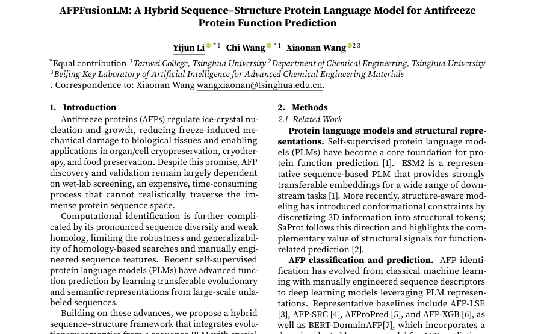
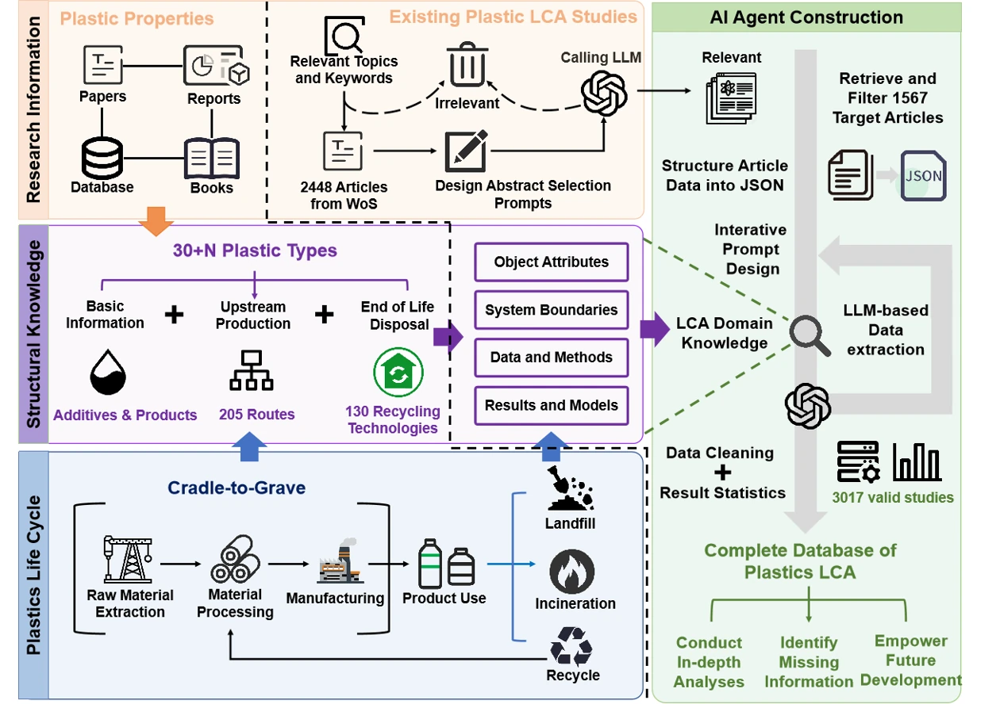
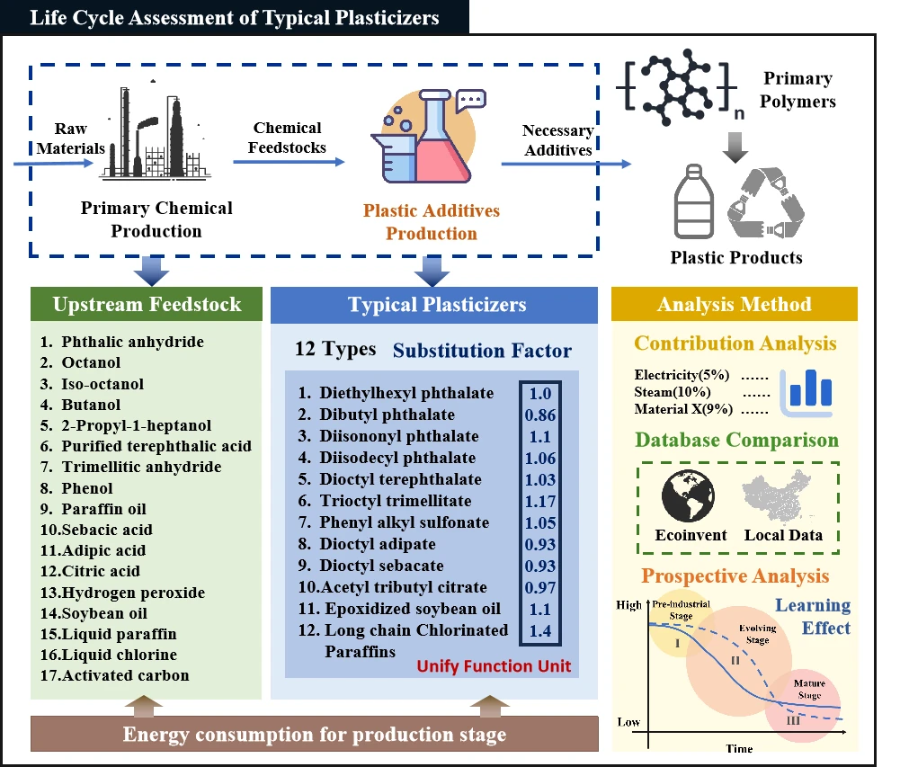
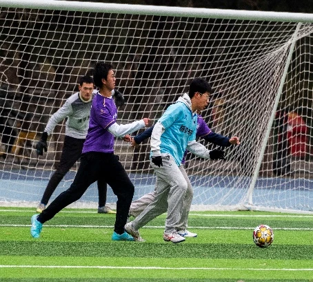
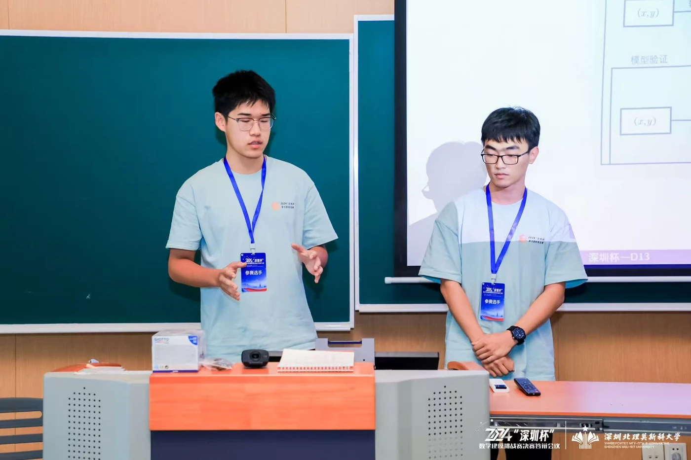

👤 Biography
I am a Ph.D. student in the Department of Chemical Engineering at Tsinghua University, advised by Prof. Xiaonan Wang. I studied chemical biology and chemical engineering at Tanwei College as an undergraduate.
My research focuses on AI for Science. I work on generative modeling, reinforcement learning, multimodal learning, and scientific AI agents, with applications in biomolecular and materials design.
I began by studying the environmental impacts of plastic additives. That work led me to develop tools for extracting scientific evidence from the literature, then to use reinforcement learning to design polymers for gas separation.
📌 More recently, I have been studying antifreeze peptides and how protein sequence and structure can help us discover molecules with useful properties.
🫡 Research Vision
- Learn from sequence, structure, and experimental measurements to understand which molecular features matter for function.
- Use generative models and reinforcement learning to propose molecules with desired properties.
- Bring scientific reasoning, physical simulations, and experimental feedback into the same discovery loop.
🔬 Research Interests
- Biomolecular design and enzyme engineering
- Generative modeling and reinforcement learning
- Multimodal learning for scientific data
- Scientific AI agents and autonomous discovery
☎️ Contact Info
- Affiliation · Department of Chemical Engineering, Tsinghua University
- Location · Beijing, China
- Google Scholar · Github
🎓 Education & Experience
- Tsinghua University (2026–present) · Ph.D. student in Chemical Engineering, advised by Prof. Xiaonan Wang.
 Stanford University (Feb. 2025–Feb. 2026) · Remote research collaboration with Prof. Adam Brandt on scientific information extraction.
Stanford University (Feb. 2025–Feb. 2026) · Remote research collaboration with Prof. Adam Brandt on scientific information extraction.- Tsinghua University (2022–2026) · Undergraduate, Tanwei College. GPA 3.9/4.0 · Rank 2/61.
🔥 News
[11.2026] 🎉 Our antifreeze peptide discovery preprint is available on bioRxiv.
[2026] 🎓 I started my Ph.D. at Tsinghua University.
[2026] 🎉 AFPFusionLM was accepted for an oral presentation at AI4X-AC.
[03.2026] 📰 Our work on plastic life-cycle impacts was featured on the cover of Nexus.
🏆 Honors & Awards
- (2025) · Wang Dazhong Scholarship
- (2025) · Scientific and Technological Innovation Scholarship
- (2024) · National Second Place, Shenzhen Cup Mathematical Modeling Challenge (Track D)
- (2024) · First-Class Comprehensive Excellence Scholarship
📝 Publications
📒 Selected publications/preprints

Large-scale AI-guided discovery of antifreeze peptides reveals functional tandem-repeat architectures
- Yijun Li, Chi Wang, Jialin Liu, et al.
- bioRxiv · Preprint, 2026.
- [Preprint] [Project repository]

ChemWorld: Programmable Chemical Worlds for Controlled and Replayable Agent Experimentation
- Jiangjie Qiu*, Yijun Li*, Xiaonan Wang
* Joint first authors. - arXiv preprint, 2026.
- [arXiv:2608.10792] [Framework figure]

DriftingMol: Decoder-Coupled Drift for One-Pass Property-Conditional Molecular Generation
- Jiangjie Qiu*, Yijun Li*, Wentao Li, Xiaonan Wang
* Joint first authors. - arXiv preprint, 2026.
- [arXiv:2605.24841] [Framework figure]


AFPFusionLM: A Hybrid Sequence–Structure Protein Language Model for Antifreeze Protein Function Prediction
- Yijun Li*, Chi Wang*, Xiaonan Wang
- AI4X-AC · Oral presentation, 2026.
- [Paper]

PolyRL: Reinforcement Learning-Guided Polymer Generation for Multi-Objective Polymer Discovery
- Wentao Li*, Yijun Li*, Qi Lei*, Zemeng Wang, Xiaonan Wang
- Digital Discovery, 2026.
- [Paper] [Framework figure]


Artificial intelligence-driven framework for science-policy interface on global plastic life cycle environmental impacts
- Kai Zhao*, Yijun Li*, Xiting Peng*, et al.
- Nexus · Cover article, 2026.
- [Paper] [Framework figure]


Life-cycle environmental impacts of typical plasticizers for plastics and their sustainable transformation potential
- Yijun Li*, Kai Zhao*, Chi Wang, Hang Fu, Shanying Hu
- Green Chemistry, 2025.
- [Paper] [Framework figure]
* Equal contribution
📚 Other publications
- A Life-Cycle Based Integrated Framework for Assessing the Sustainability of Plastic Additives. 2025 · ACS Sustainable Chemistry & Engineering.
- Identifying the flows and stocks of additives in polyvinyl chloride plastics for balancing environmental and economic impacts. 2025 · Resources, Conservation and Recycling.
- Life-Cycle Environmental Impacts of Additive-Related Chemicals in Polyvinyl Chloride Plastics and the Mitigation Potential. 2024 · Environmental Science & Technology.
😄 Miscellaneous
Sports & community
I captained the basketball and football teams at Tanwei College. I also spent over 120 hours volunteering during my undergraduate studies.


Shenzhen Cup

